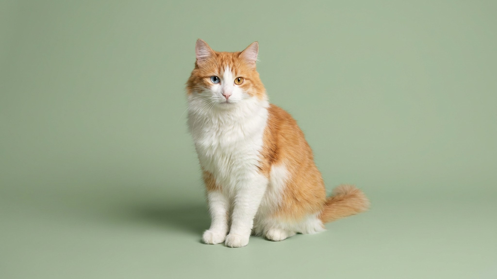

Большинство кошек воду терпят — турецкий ван её ищет сам. Плещется лапой в миске, заходит в поддон душа, тащит игрушки к воде. Это не случайная привычка, а часть породы, сложившейся у озера Ван на востоке Турции. Ниже — характер, уход и всё, что отличает вана от его часто путаемого «родственника» — турецкой ангоры.
🐾 Здоровье питомца под контролем
AI-ветеринар, дневник здоровья и персональные советы для вашего питомца — установите AnimaLife бесплатно.
Турецкий ван формировался в суровом горном климате у солёного озера Ван. Местные кошки охотились в том числе у воды — и со временем интерес к ней закрепился в породе. Шерсть вана имеет особую текстуру: полудлинная, без густого подшёрстка, быстро отводит влагу — природный «гидрокостюм».
В домашних условиях это проявляется по-разному: одни ваны только плещутся лапой, другие заходят в ванну или умывальник целиком. Проточная вода привлекает их сильнее стоячей — фонтанчик для питья ван оценит быстро.
Владельцы турецкого вана нередко говорят, что порода ведёт себя «по-собачьи» — и это точное описание:
Порода подходит активным людям, готовым ежедневно играть и уважать границы кошки. Для семей с маленькими детьми, привыкшими тискать животных, ван может оказаться неудобным выбором.
Несмотря на полудлинную шерсть, уход за турецким ваном несложный. Именно отсутствие густого подшёрстка делает своё дело — шерсть почти не сваливается в колтуны.
Турецкий ван и турецкая ангора — две разные породы с разным происхождением, и путаница между ними распространена даже среди заводчиков. Ключевые отличия:
Турецкий ван — выбор для тех, кто хочет активную, умную кошку с характером и готов принять её правила игры. Взамен получаете преданного компаньона с многолетней историей у берегов горного озера.
🐾 Первая помощь — всегда под рукой
AnimaLife подскажет, что делать в тревожной ситуации с питомцем ещё до визита к врачу. Откройте в один тап.
🐾 Понравился разбор?
Подпишитесь на канал — каждый день разбираем по одному тревожному симптому у кошек и собак: что в пределах нормы, а когда пора к врачу. Подпишитесь, чтобы не пропустить разбор, который может спасти здоровье вашего питомца.
Материал носит информационный характер и не заменяет очную консультацию ветеринара.